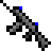
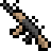
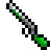

-Rhyfel-server公式サイト
武器一覧
このサーバーには様々な種類の武器があり、その中からお気に入りの武器を見つけるのがこの鯖の醍醐味である。 是非このページを活用してお気に入りの武器を見つけてほしい。
Assault Rifle
特徴
- ほぼ射程が無限で、弾速も早く、扱いやすい
- 弾道落下が存在しないため、純粋なAimが必要になってくる
- しかしシフトでADSしないと意外とばらけるので注意
立ち回りの工夫
- 芋をするのは意外と向かない
- 移動しながら乱射する人もいれば30秒くらいそこにとどまって打つ人もいる
- 割とどうにでも使えるので自由に立ち回ろう
武器性能
| アイテム画像 | 武器名 | 装弾数 | ダメージ |
|---|---|---|---|
| AK Rifle | 30発 | 4dmg | |
| 王道AR。基本的な性能であり、扱いやすくなっている(と思う) 。 初心者にもおすすめ。実銃その1 | |||
|  | type-95 | 30発 | 5dmg |
| 95式と呼ばれる銃。性能はそこそこ。 これは完全に開発者目線だが、強すぎるのでナーフしたい。だったらしろよという話ではあるが。 実銃その2 | |||
| AR99 Compact Rifle | 15発 | 2dmg | |
| 装弾数、ダメージが低いがリロードが早い。 連戦向けのAR。 | |||
|  | Struck burst rifle | 20発 | 2dmg |
| 4点burstだった気がする銃。その辺の奴は覚えてないから仕方ない。 damageこそ低いがDPSはAR99より高い気がするので殴っていこう。 | |||
| SiG1178 | 33発 | 1dmg | |
| 高レート低威力の銃。決して名前に困ったわけじゃない。低威力といってもHSダメージは設定してる。ちなみに5dmg。恐ろしい! | |||
Shotgun
特徴
- 射程は短いがダメージが高い
- リロードは基本1発ずつ行われる
立ち回りの工夫
- 突撃してどんどん敵を倒す
- 射程が短く、遠くから攻撃されると何もできないので遮蔽物に隠れながら移動する
武器性能
| アイテム画像 | 武器名 | 装弾数 | 射程 |
|---|---|---|---|
| SAUA shotgun | 6発 | 13m | |
| 短射程。リロードが早く、基本的な性能。 | |||
|  | M132 shotgun | 5発 | 21m |
| 長射程。装弾数はSAUAより少し低い程度だがほとんど同じ。また拡散値が広いので、エイムに自信がなくても使いやすいだろう。 | |||
| Leiden shotgun | 6発 | 7m | |
| 個別装填ではなく一気にリロードするタイプ。拡散値が低かった気がする。 | |||
| Spras nearing | 6発 | 17m | |
| こちらも一気にリロードするタイプ。おそらく一番平均的な性能 | |||
Sniper Rifle
特徴
- 射程が無限で威力が高い武器が多い
- このサーバーのSRは思っているよりも弾速が遅いため動いている敵に当てるには慣れが必要かもしれない
立ち回りの工夫
- もし外した場合はサブ武器に切り替えるか、遮蔽物に隠れる
- 基本的に遠くの敵を攻撃することが得意な武器なので、広いマップで使う
武器性能
| アイテム画像 | 武器名 | 装弾数 | ダメージ ()内はHS時 |
|---|---|---|---|
| Death Binger | 5発 | 距離によって変化 | |
| 敵との距離が長くなるほどダメージが高くなる変わった性能のSR。大体22m離れると20dmg-->バフなしワンパンなのでしっかり距離をとれるマップで使おう。 ちなみにダメージに限界はないので距離さえとれれば理論上どんな敵でも倒せる。 | |||
| Hunting Rifle | 5発 | 18dmg(30dmg) | |
| HSで高い火力が出るSR。エイムに自信のある人が使えばキルレ500だって夢じゃない。 | |||
| 75 CAL mitrear | 3発 | 1040dmg | |
| 当たればどれだけHPを盛っている敵でも倒せる威力を持っているが精度がかなり低い。したがって遠くの倒すのはほぼ不可能である。 しかし近くの敵にならなんとか当てられるので凸砂として運用するのがいいだろう。 | |||
| M24 Lock Rifle | 3発 | 40dmg | |
| 威力も精度も申し分ないが弾数が少ないので1発を大切にしよう | |||
SMG
特徴
- 高レート短射程のものが多い
- ADSしなくても精度は変わらないので、ARと違い走りながら攻撃できる
立ち回りの工夫
- 射程が短く、遠くから攻撃されると何もできないので物陰に隠れながら行動する
- 広いマップだとSMGの長所を活かしづらいので、狭いマップで使うようにする
武器性能
| アイテム画像 | 武器名 | 装弾数 | ダメージ |
|---|---|---|---|
| Wox 5-Z | 30発 | 4dmg | |
| クリックすることで3発の銃弾が発射される3点バースト式。精度はそこまでよくないが弾持ちがいいのでどこかを制圧する時には割と使えるかもしれない。正直弱い | |||
| MA20 teckerluna | 30発 | 4dmg | |
| 3点バーストSMG。 | |||
 |
GG33 SMG | 30発 | 4dmg |
| 2発同時発射のSMG。こちらも3点バースト式。 | |||
special
特徴
- グレネードランチャーなどの爆発物がこのカテゴリーに当てはまる
- これらの武器を手に持っていると移動速度が低下する
立ち回りの工夫
- ごちゃごちゃした場所に適当に撃っていればキルできる
武器性能
| アイテム画像 | 武器名 | 装弾数 | ダメージ | ||||||||||||||||||||||||||||||||||||||||||||||||||||||||||||
|---|---|---|---|---|---|---|---|---|---|---|---|---|---|---|---|---|---|---|---|---|---|---|---|---|---|---|---|---|---|---|---|---|---|---|---|---|---|---|---|---|---|---|---|---|---|---|---|---|---|---|---|---|---|---|---|---|---|---|---|---|---|---|---|
| GL29 lock homing | 7発 | 爆風で即死() | |||||||||||||||||||||||||||||||||||||||||||||||||||||||||||||
| 爆発範囲の広い爆弾をまっすぐ飛ばすグレネードランチャー。名前に"homing"とあるが別に追尾機能が搭載されているわけではない。 | |||||||||||||||||||||||||||||||||||||||||||||||||||||||||||||||
| REC-20 EDPC | 4発 | 爆風に2回当たるとダウン | |||||||||||||||||||||||||||||||||||||||||||||||||||||||||||||
| GL29に似た性能。装弾数と威力はGL29の方が強いが、弾速はこちらの方が速い。爆風でゴリ押すよりもしっかり狙って直撃で倒すタイプなので、エイムに自信がない人は 他の武器を使う方がよいかもしれない。 | |||||||||||||||||||||||||||||||||||||||||||||||||||||||||||||||
| GL-129 Zevder | 30発 | 即死 | |||||||||||||||||||||||||||||||||||||||||||||||||||||||||||||
| 爆風に当たるだけで即死するグレネードをフルオートでばらまくグレネードランチャー。使うだけでヘイト買いそうなレベルで強い。はやくナーフを... | |||||||||||||||||||||||||||||||||||||||||||||||||||||||||||||||
| mincemachine | 3発 | 即死 | |||||||||||||||||||||||||||||||||||||||||||||||||||||||||||||
| サーバー初期から存在する武器。爆発範囲が非常に広く(半径10ブロック以上)、TNTの10000000倍の火力が出ると言われている。 ここまで聞けば最強の武器のように思うかもしれないが、リロードが絶望的に遅い。なんとリロードにかかる時間は20秒。どうしてこうなったのか。 その謎を解明すべく我々はアマゾンの奥地へと向かった... | |||||||||||||||||||||||||||||||||||||||||||||||||||||||||||||||
メレー
特徴
- メイン武器と一緒に使うことができる
- 近接武器なので当然遠くにいる敵には役に立たない
立ち回りの工夫
- メレーは左クリックで少しだけ前に前進する仕様なので移動用に使おう。ただし敵の近くで使うと音で居場所がバレるので注意
武器性能
| アイテム画像 | 武器名 | ダメージ |
|---|---|---|
| knife | 8dmg | |
| シンプルな刃物。メレーは基本的に範囲攻撃なので敵が群れている所に突っ込めば連続キルが期待できる。 | ||
 |
trass | 10dmg |
| knifeよりも前進する距離が短いがこちらの方がダメージは高い。よく似た性能なので好みで使い分けよう。 | ||
| golden hammer | 20dmg | |
| 見るからに危険なハンマー。その見た目の通りこれで殴られれば大抵の敵が倒れる。攻撃間隔が長く少し扱いづらいが、ロマンを追い求める人におすすめ。 | ||
| masir naginata | 15dmg | |
| 攻撃間隔がかなり長いが、前進する距離が長いため移動用として優れている。 この武器ではHPがフルの敵を1撃で倒すことができないので、これで攻撃した後はすぐにメイン武器に切り替えよう。 | ||
ネタ武器
特徴
- 運営のノリで生み出された武器
- 実用性が皆無な物もあれば、バランス崩壊不可避なほどぶっ壊れた性能の物もある
- あたまおかしい
立ち回りの工夫
- んなもんあるか
- /del
武器の性能等は準備中